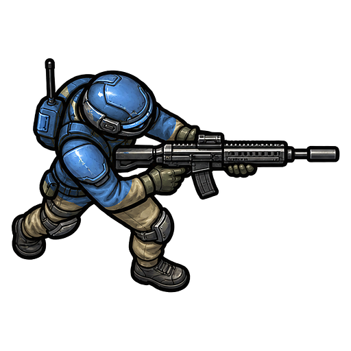

CAMPAIGN
战役地图
肃清尸潮，向失落城区推进
开启新一轮战役可保留旧档，随时切回
图例已通关可挑战未解锁
战前整备
部署阵容
正面来敌 ↑招募部队
招募不限量 · 战前购买招募不限量，金币足够即可购买。先选兵种，再逐个部署，场上单位不能重叠。
第 1 / 2 波
击杀 0待结算 +0
Ⅱ
战斗已暂停
准备好后继续作战

最后防线尸潮战役 · LAST LINE肃清尸潮，向失落城区推进
招募不限量，金币足够即可购买。先选兵种，再逐个部署，场上单位不能重叠。
准备好后继续作战